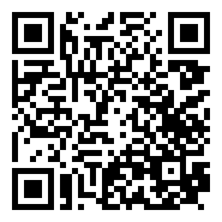
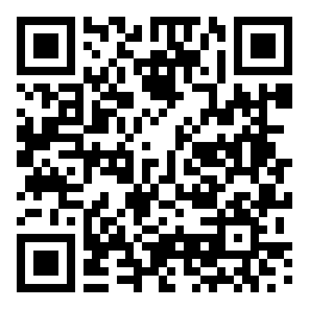
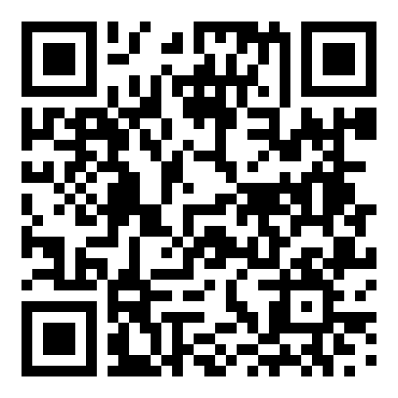

Show the staff in Korean. Free cards, no sign-up.

Vegan · Vegetarian · Buddhist (no garlic/onion) · Halal · No pork · Gluten-free · Nut, shellfish, egg, dairy, sesame, soy allergies · Not spicy
English · 简体中文 · 繁體中文 · 日本語 · Bahasa Indonesia · Tiếng Việt · ไทย
알레르기·채식 손님용 한국어 카드
wayfen-games.github.io/wayfen-tools/foodShow the pharmacist or driver in Korean.

Headache · Fever · Cold · Stomach · Allergies · Taxi address card · Tax refund & shopping phrases
English · 简体中文 · 繁體中文 · 日本語 · Bahasa Indonesia · Tiếng Việt · ไทย
약국·택시·쇼핑 한국어 카드
wayfen-games.github.io/wayfen-tools/pharmacyShow the staff in Korean. · Tunjukkan ke staf dalam bahasa Korea.

Halal · Tanpa babi · Tanpa alkohol · Vegetarian · Alergi
무슬림 손님용 할랄 카드 (인도네시아어 화면)
wayfen-games.github.io/wayfen-tools/food/?lang=id© 2026 Wayfen. All rights reserved. 무단 복제·재배포 금지